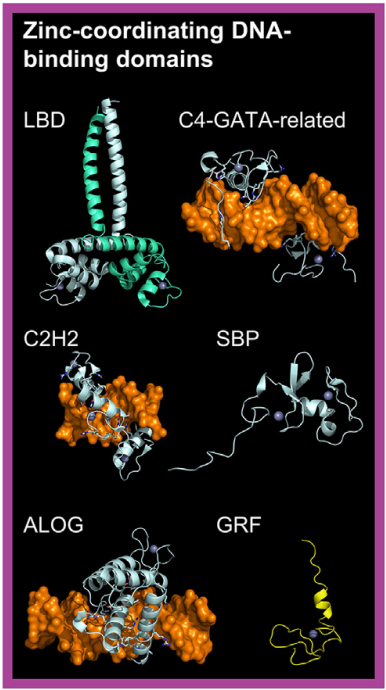

The DNA-binding domains (DBDs) of transcription factors in this superclass are structured around one or more zinc ions.
The nature of zinc coordination and the resulting DBD fold define nine distinct classes in the TFClass system.
Plants share two transcription factor families with animals: C2H2 (from the C2H2 zinc finger factors class) and C2-GATA-related (from the Other C4 zinc finger-type factors class).
In the C2H2 fold, the "zinc finger" is a loop formed between a beta-hairpin and an alpha-helix, where the zinc atom is coordinated by two cysteine and two histidine residues.
Multiple zinc fingers can wrap around the major groove of DNA through interactions between the alpha-helices and the groove.
In plants, IDD transcription factors bind DNA using two C2H2 and two C2CH zinc fingers, with the first C2H2 finger being critical for specific binding.
Thus, IDD factors are classified as a family within the C2H2 class. The C2-GATA-related fold is a variant of the C2H2 structure, where coordination involves four cysteine residues.
Additionally, five plant-specific transcription factor types have been identified within this superclass:
